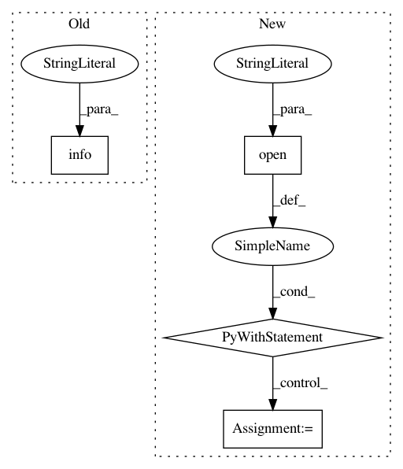

42c5df6f644493cf055d0b2e1a756c946d49c38f,perfzero/lib/setup.py,SetupRunner,setup,#SetupRunner#,46
Before Change
self.docker_file_path, self.docker_tag)
utils.run_commands([docker_build_cmd])
logging.info("Completed setup operation")
def _get_git_repos(self):
Return list of repos to checkout.
git_repos = []
After Change
setup_info = {}
setup_info["env_vars"] = self.config.get_env_vars()
setup_info["site_package_info"] = site_package_info
with open(os.path.join(self.workspace_dir, "setup_info.log"), "w") as f:
json.dump(setup_info, f)
logging.info("Setup operation completed with summary:\n %s",
json.dumps(setup_info, indent=2))
def _get_git_repos(self):
In pattern: SUPERPATTERN
Frequency: 4
Non-data size: 4
Instances
Project Name: tensorflow/benchmarks
Commit Name: 42c5df6f644493cf055d0b2e1a756c946d49c38f
Time: 2019-02-06
Author: donglin@google.com
File Name: perfzero/lib/setup.py
Class Name: SetupRunner
Method Name: setup
Project Name: merenlab/anvio
Commit Name: ec4d077c5bd7e7d413c003ef5ed39cf4ced1f0f5
Time: 2019-08-09
Author: quentin.clayssen@gmail.com
File Name: anvio/taxoestimation.py
Class Name: SCGsTaxomy
Method Name: estimate_taxonomy
Project Name: kubeflow/kubeflow
Commit Name: 8fcd7448ea2c700246f3de3bbdd2b2cbca7a9cdf
Time: 2018-04-26
Author: jose5918@gmail.com
File Name: testing/test_deploy.py
Class Name:
Method Name: setup_kubeflow_ks_app
Project Name: scikit-multiflow/scikit-multiflow
Commit Name: b70ad56f5c3a1f51a6c5e9143f212fcac23738f3
Time: 2017-06-21
Author: guilhermekmatsumoto@gmail.com
File Name: skmultiflow/evaluation/EvaluatePrequential.py
Class Name: EvaluatePrequential
Method Name: train_and_test